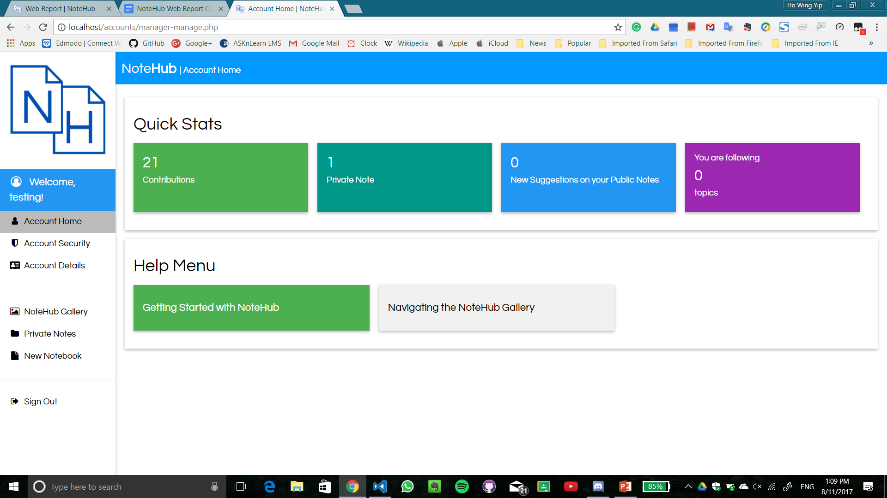

Aloysius Lee Seng Yang
Ho Wing Yip
Samuel Lim Kar Ern
Theodore Lee
Mentor: Mr Tan Choo Kee
Introduction
In the modern world, the Internet stores a vast amount of information, which gives users access to many sources of information. However, these sources may not be reliable at times, and some reliable sources of information may be "lost" amidst the vastness of the Internet, resulting in a fragmentation of information on the Internet. This makes it difficult at times for Internet users such as students to find notes on a particular subject, which lowers the efficiency and effectiveness of the Internet. Even though there are already some note-sharing services on the Internet, these services have weaknesses which reduce their effectiveness. These existing note-sharing services are thus inadequate for studying. Our solution to this problem is NoteHub, a free note-sharing service for anyone, even though it is mainly targeted at students, which aims to organise many notes on the Internet into one place, where they will be sorted according to their topic and credibility. This will be achieved through maintaining an algorithm-collated gallery, or "hub", of notes, as well as keeping a constantly updated list of notes from the Internet through users' contributions.
Literature Review
There are a few note-sharing apps available to Internet users similar to NoteHub. However, these services have a few weaknesses which lowers their effectiveness to organise notes. Below, a comparison of these services to NoteHub will be made.
From the above, it is plain that many note-sharing services are not adequate for the demand for study notes on the Internet. NoteHub aims to fill in the gap and become the main note-sharing service for study notes on the Internet.
Hence, to improve on previous note-sharing services, NoteHub's objectives are to:
enable free, efficient note-sharing and collaboration between users;
allow notes to be found easier on the Internet; and
bring a larger variety of notes to the Internet.
Methodology
Timeframe
NoteHub's development has been split into four phases, namely Core Code, Interface, Account Systems / Permissions Management, and Testing Period.
Hover over a phase to see more about it.
Core Code
Interface
Account Systems
Testing Period
During the Core Code phase, the basic layout of NoteHub was established, such as the main page, the about page and the logbook were created. The core code set the outline for the next two phases.
The Interface stage saw a complete redesign of NoteHub's user interface to attract users to NoteHub and make the design cleaner, and the page easier to use.
The Accounts phase was the most important. The account system, intelligent algorithm, note-saving system and the permissions management were set up, enabling users to create accounts and save or share notes.
Including both alpha and beta testing, the testing period aims to spread word about NoteHub and see real-life responses to NoteHub to find its popularity amongst students.
What Did We Use?
We used quite a few programming languages and frameworks to build NoteHub.
HTML for the UI;
CSS for the UI;
JavaScript for the frontend, UI, UX and intelligent algorithms;
jQuery framework for this web report;
W3.CSS Framework for the UI;
PHP for the backend;
CKEditor framework for the note editor; and
JSON for the database.
Features
Accounts System
A sophisticated account system allows users to manage their accounts, allowing users to create, manage and delete their accounts. Passwords can be changed, along with settings and preferences for note topics that our algorithm picks up automatically, to serve the user with content that best suits them.

NoteHub's Account Manager
Mobile-Readiness
NoteHub is optimised for mobile devices as well as computers, so notes can really be accessed and collaborated on from anywhere. On smaller screens, the interface is able to properly resize and keep itself clean and simple for easy browsing.
NoteHub is highly mobile-ready.
Note Editor
Powered by CKEditor, our note editor operates with notebooks, much like how one would edit a OneNote notebook. However, public notes come with a special 'References' note, that is parsed by our algorithms. This ensures that public notes are of a substantial quality, as pubic notes can be browsed by almost anyone using NoteHub.
The note editor enables text formatting, images and hyperlinks to be added to notes. These functions and more are neatly organised in a bar at the top of the page.
NoteHub's note editor.
Note Manager
The note manager is a platform for users to edit their notes. It has a basic search function which allows users to find a specific note from their notes, as well as the ability to create, retrieve, update and delete notes. It also has a simple, easy-to-use interface.
The Note Manager.
Gallery
The Gallery is the Hub in NoteHub. It gathers all of the public notes on NoteHub and places it in one place where users can view them.
Currently, it has a fully-featured search which allows users to search for notes with ease. However, the gallery also includes suggestion algorithms which can put up recommended notes for users and give users suggestions on notes which they may be interested in. The gallery is supported by a clean, modern and full interface.
NoteHub's Gallery.
Note-Sharing
An essential feature of NoteHub, note sharing on NoteHub is easy. Notes can be shared via URLs or the Gallery. Play the video below to see a demonstration.
NoteHub's Gallery.
Backend
NoteHub's PHP backend can later be used to develop an API for NoteHub, paving the way for endless possibilities.
Algorithms
NoteHub's intelligent algorithms check for the credibility and content of a note. The algorithms can check for word count, suggest tags based on content and suggest notes for the user to read based on the user's previously read notes. The intelligent algorithms can also learn based on past experiences to check notes more accurately and precisely based on the content and credibility of the note.
Limitations
Realtime Collaboration
A realtime collaboration system where users can edit both public and private notes together is incomplete due to lack of time and enough free web hosting.
Internet Connectivity
NoteHub is meant to be a web app which saves notes on the Internet.
As such, anyone who does not have an Internet connection will not be able to access NoteHub.
Scanning or Handwriting Features
NoteHub will not implement any scanning or handwriting features.
Acknowledgements
NoteHub wouldn't have been possible without many external projects, such as rich text editors, libraries, plugins and icons, done by some really cool people. Check them out!
Tagging user interface made possible by GitHub user 'k-ivan'.
Note Editor made possible by CKEditor, an excellent free text editor. This code has been used under its various licenses.
The amazing icons for our account managers and web apps were taken from Font Awesome, the iconic font and CSS toolkit. The icons have been used under its various licences.
Last but definitely up there in the top three, a big thanks to W3.css for providing us with the perfect tools to perfect our difficult-to-implement designs.
.png)
 From the above, it is plain that many note-sharing services are not adequate for the demand for study notes on the Internet. NoteHub aims to fill in the gap and become the main note-sharing service for study notes on the Internet.
From the above, it is plain that many note-sharing services are not adequate for the demand for study notes on the Internet. NoteHub aims to fill in the gap and become the main note-sharing service for study notes on the Internet.


.png)
.png)
.png)
.png)
{kind=link}
{kind=link}
{kind=link}
{kind=link}